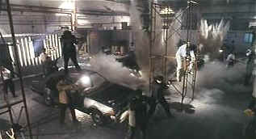

| Hard Boiled/B-/D+ |
| Winstar/1992/126/WS 1.85 |
This is the last of the John Woo Hong Kongs. Woo has proved himself a Hollywood heavy hitter with action flicks like Face-Off, Broken Arrow and the latest Cruise control actioner, Mission Impossible II. Hard Boiled is a one dimensional primer in the art of screen pyrotechnics delivered in a non-stop explosive assault on the senses. For more than two hours, the spark highlighted machine pistol bullets of Woo alternate with pump gun blasts in creating a sea of blood. How appropriate that director Woo chooses a hospital as the venue for his final "tour-de-blast." In the spirit of conservation, hospital crews could be collecting from the blood spilled corridors every last puddle of plasma and recycling them into convenient vials for later real life hospital transfusions.
 |
| Out-Wooing himself. ©Winstar |
Still, while it lacks the sentimental
juxtapositions that worked so well in The Killer, the mountain of massed mayhem in Hard
Boiled is striking enough to continually engage the audience on a visual level. That is fails
to create a visceral link between characters and viewers prevents the film from breaking out of its
choreographed mold.
The tale of mixed loyalties and undercover roles, at times confusing, is carried
equally on the shoulders of its two stars, Chow Yun-Fat and Tony Leung, who twist and bound between
the bullets. The lack of emphasis on character is the chief weakness of Hard Boiled and
leaves the two actors subordinate to the technique that dominates the film. When Woo subordinates
his technical skill to story, he is at his best, but that is not the case here.
The transfer is a huge let-down. Woo's spectacular shoot-outs, flashy
beyond belief, deserve crisp, clear images to reveal all the details in the frame. Hard Boiled
in DVD has multiple problems. First and foremost, the black levels are outrageously mismanaged.
Blacks lack luster and appear more charcoal gray. You cannot fix the problem by simply dropping
brightness down. I tried watching at a number of different settings and while the picture was
better with significantly reduced black level, the frame lost detail and looked muddy. Color is a
mixed bag, but black level affects all the colors, so that's no surprise. Overall, there is a lack
of high end resolution. Details are smeared and lack depth. The mono Cantonese soundtrack lacks
dimension. Dynamic range is thin. Yellow English subtitles appear on the bottom of the image and
slightly into the black letterbox area. You can turn off the subtitles and try the English dub, but
it won't take you long to decide that those are note the voices and delivery you would associate
with any of the actors.
Fans of Woo might want the DVD simply for the audio commentary provided on a
separate English track. Woo and his producing partner Terrence Chang provide observations on the
production and character motivation. Woo is free with his personal philosophy. I like the
description of how Chow's bandage came about, inspired by Chinatown.
Selections from the feature archive include articles on Akira Kurosawa, Frank Darabont, Blonde Bimbos, Hollywood Street Gangs, or Vietnam: The Hollywood Pariah, and many more....

What actor would you vote whose screen persona best exemplified the fabric of the president of the United States? Check act Acting Presidential for a look at the many actors who have coveted The Oval Office.

Home of The American Film Institute.


News, information, features about current films in theaters and in the
pipeline. Easy to use interface.

The DVD Forum is an international association of hardware
manufacturers, software firms and other users of Digital Versatile Discs (the "DVD
Format"), created for the purpose of exchanging and disseminating ideas and information about
the DVD Format and its technical capabilities, improvements and innovations.
 Direct from the corridors of the Home Theater Forum, Home Theater Talk is the
newest place on the Net to discuss everything home theater. Friendly atmosphere and knowledgeable
folks are the secret ingredients.
Direct from the corridors of the Home Theater Forum, Home Theater Talk is the
newest place on the Net to discuss everything home theater. Friendly atmosphere and knowledgeable
folks are the secret ingredients.

Click on the link to visit the judge's chambers.

The Movie Poster Archive include extensive poster images from the films of stars like Susan Hayward, Kirk Douglas, Katharine Hepburn and many more. Our featured star is Robert Mitchum